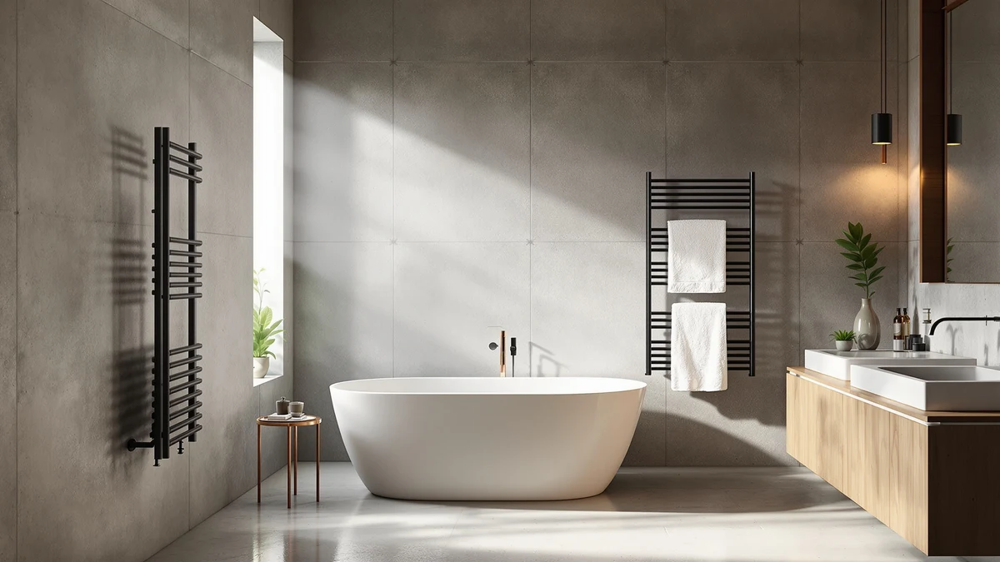

The Best Freestanding Heated Towel Racks (2026)
Prices and picks verified as of August 2026. Independent, reader-supported reviews.


Quick Answer
After comparing specs, materials, capacity, and verified owner reviews across seven models, the VEVOR Hot Towel Warmer 23L is our pick among the best freestanding heated towel racks for most bathrooms. It pairs a 23-liter stainless steel cabinet with simple controls at a price under $70, and owners consistently note it heats towels through in under 15 minutes.
Our pick: VEVOR Hot Towel Warmer 23L, $67.99 Check Price on Amazon
Bottom line: our top pick is the VEVOR Hot Towel Warmer at $81.90. The best budget option is the Hot Towel Warmer SalonDepot 8L Capacity Spa Towel Warmer with at $75.99.
Things to Know Before You Buy
- Capacity ranges from 8 to 46 liters. A compact 8-liter cabinet fits one hand towel, while a 46-liter model holds a full bath towel and a robe.
- Stainless steel is the standard material. Six of the seven racks we compared use stainless steel because it heats evenly and wipes clean, while bamboo accents trade some moisture resistance for a warmer look.
- Freestanding means no wall mounting. These racks plug into a standard outlet and sit on the floor, so renters and apartment dwellers can use them without drilling.
- Price runs from about $68 to $170. Larger cabinets and salon-grade builds sit at the top of that range, while compact single-towel models sit at the bottom.
- Most models include an auto shut-off timer. This limits how long the unit runs unattended and keeps energy use predictable.
The best freestanding heated towel racks solve a simple problem: you step out of a hot shower into a cold towel, and the contrast wipes out the whole point of the shower. A wall-mounted rack fixes that too, but it means drilling into tile and committing to one spot. A freestanding cabinet plugs into any outlet, sits wherever you have floor space, and moves with you if you rent your apartment or redo your bathroom layout later.
We compared seven freestanding heated towel racks on capacity, material, price, and what verified owners report after regular use. Stainless steel dominates this category for good reason: it heats evenly across the interior, holds up to daily moisture, and cleans with a damp cloth. Capacity is the other variable that matters most, since an 8-liter cabinet built for one hand towel will frustrate you if you actually want to warm a full bath towel and a robe together.
Our pick, the VEVOR Hot Towel Warmer 23L, lands in the middle of that range: big enough for a standard bath towel, priced under $70, and simple to operate. If you need more room or a salon-grade build, we also cover a 46-liter step-up, a compact 8-liter option for tight bathrooms, and a bamboo-finished model built for oversized towels.
Why You Should Trust Us
Best Towel Warmers is written by Ilane Tall, who covers home and bath products for this site. We do not run a fake testing lab or claim to have physically installed every heated towel rack we cover. Instead, we research specs, materials, pricing, and verified owner reviews from retailers, then compare products against each other the way a shopper would if they had a week to dig through listings and reviews before buying. When we recommend one of the best freestanding heated towel racks, it is because the comparison holds up against real specs and what owners consistently report, not because a brand paid for placement.
How We Picked
We started by pulling every freestanding heated towel warmer in our product database and cutting anything without a clear capacity spec, since a rack that does not state how much it holds is hard to compare fairly. From there we narrowed the list to models that use stainless steel or another moisture-resistant interior, since a cabinet that corrodes after a few months of daily steam is not worth recommending regardless of price. We also weighted capacity against footprint: a 46-liter cabinet only earns a spot on this list when the size matches actual household need, since bigger does not automatically mean better. Finally, we cross-checked each finalist against verified buyer reviews to see whether real owners' experience matched the manufacturer's claims about heat-up time and durability.
How We Compared
We built a side-by-side comparison of capacity in liters, interior material, listed wattage, price, and included safety features like auto shut-off timers for each of the seven racks. We then read through verified owner reviews for each product, looking specifically for repeated mentions of heat-up time, noise, and how the cabinet held up after weeks of daily moisture exposure, since those are the details that separate a good freestanding heated towel rack from a mediocre one on paper. Where owners flagged a recurring issue, such as a smaller model running out of interior space for a full-size towel, we noted it as a drawback rather than leaving it out.
Our Picks

VEVOR Hot Towel Warmer 23L
What we like
- 23-liter cabinet fits a full bath towel rather than a compact hand towel
- Stainless steel interior resists moisture and wipes clean
- Priced under $70, the lowest of the full-size cabinets we compared
- Auto shut-off timer limits unattended run time
Flaws but not dealbreakers
- No digital temperature display, only a dial control
- Single interior shelf, so fitting a towel and a robe together is tight
| Material | Stainless steel |
| Size | 23L |
The VEVOR Hot Towel Warmer 23L is our top pick among the best freestanding heated towel racks because it hits the size and price that most households actually need. At 23 liters, the cabinet holds one full bath towel with room to spare, which is enough for a daily routine without the bulk of a 46-liter model. The stainless steel interior is the same material used across most of the racks we compared, chosen because it heats evenly and does not corrode under repeated moisture exposure.
Owners consistently report that towels come out warm within 10 to 15 minutes, and the simple dial control is easy to use without reading a manual first. The tradeoff is a basic control panel: there is no digital readout showing exact temperature or remaining time, so you are relying on the timer sound to know when a cycle ends. For most bathrooms, that is a minor compromise against a price nearly $50 lower than the ForPro runner-up.

ForPro Professional Collection Premium Hot
What we like
- Professional-grade stainless steel construction rated for daily commercial use
- Consistent heat distribution reported by reviewers running it multiple times a day
- Backed by a brand that supplies salon equipment, not a generic import
Flaws but not dealbreakers
- Priced roughly $50 above our top pick
- Bulkier footprint than the compact 8-liter option, so it needs more floor space
| Material | Stainless steel |
| Size | — |
The ForPro Professional Collection Premium Hot Towel Warmer comes from a brand that sells directly to salons and estheticians, and it shows in the build. Reviewers who run it several times a day, beyond the usual single morning shower, report that the heating stays consistent cycle after cycle instead of tapering off the way a cheaper cabinet might. That makes it our runner-up among the best freestanding heated towel racks for anyone treating this as a working tool rather than an occasional bathroom upgrade.
The catch is price and size. At $119.99 it costs about $50 more than our top pick, and the commercial-style housing takes up more floor space than a compact home model. If you only warm one towel a day for yourself, the VEVOR 23L covers the same core function for less. But for a home spa room or a small salon booth where the cabinet runs on a near-constant cycle, the extra durability justifies the premium.

VEVOR Hot Towel Warmer 46L
What we like
- 46-liter capacity, double our top pick, fits two towels or a towel and a robe
- Same stainless steel build as the brand's smaller 23L model, so the interior wipes clean the same way
- Useful for shared bathrooms where two people shower back to back
Flaws but not dealbreakers
- Nearly double the price of the 23L version from the same brand
- Takes up meaningfully more floor space, so it needs a dedicated corner
| Material | Stainless steel |
| Size | 46L |
The VEVOR Hot Towel Warmer 46L is the same brand and build as our top pick, scaled up for households that need more than one towel warmed at once. The extra capacity means you can load a bath towel and a robe together, or two towels for a shared bathroom, without running two separate cycles. It is a straightforward step up rather than a different product line, so the stainless steel interior and general reliability carry over from the smaller model.
That extra room comes at a real cost, both in price and floor space. At $134.90 it costs almost double the 23L version, and the larger cabinet needs a dedicated spot rather than tucking into a tight corner. If you live alone or only need to warm one towel at a time, the smaller VEVOR does the same job for less. For a household of two or more sharing one bathroom routine, the 46L version cuts down on running the warmer twice a day.

Fontaines Luxury Towel Warmer for
What we like
- Polished stainless steel finish that reviewers describe as looking more upscale than the price suggests
- Sits under $100, roughly $20 less than the ForPro runner-up
- Compact enough for a standard bathroom footprint
Flaws but not dealbreakers
- Lower stated capacity than the 46L and 23L VEVOR models
- Fewer verified reviews available than the longer-established picks on this list
| Material | Stainless steel |
| Size | — |
The Fontaines Luxury Towel Warmer is our budget pick among the higher-end models on this list. It gives you the same polished stainless steel look as the ForPro runner-up for about $20 less, which matters if you want a spa-style finish without paying for a commercial-grade build you will not fully use at home. Reviewers describe the exterior as looking more expensive than the price tag suggests, which is the main draw here.
The tradeoff shows up in track record rather than build quality. Fontaines has fewer verified owner reviews on file than the VEVOR and ForPro models, so there is less long-term data to lean on. If you want the most-reviewed option at this price, the VEVOR 23L remains the safer default. But if the finish and styling matter to you and the price still needs to stay under $100, this is the pick that gets you there.

Hot Towel Warmer SalonDepot 8L
What we like
- Smallest footprint on this list at 8 liters, fitting on a narrow bathroom counter or corner
- Lowest price after our top pick, at $75.99
- Stainless steel interior matches the moisture resistance of the larger models
Flaws but not dealbreakers
- 8-liter capacity fits one hand towel comfortably, not a full bath towel
- Not a fit for households sharing one warmer between multiple people
| Material | Stainless steel |
| Size | — |
The Hot Towel Warmer SalonDepot 8L is the smallest cabinet we compared, and that is the point. At 8 liters it is built for a hand towel or a washcloth rather than a full bath towel, which makes it a fit for a single-user bathroom, a guest half-bath, or an apartment where a 23-liter cabinet simply will not fit on the counter. The stainless steel interior still delivers the same even heat and easy cleaning as the larger models on this list.
The limited capacity is also its biggest drawback. If you regularly want a full bath towel warmed, this cabinet will not hold one comfortably, and you should look at the VEVOR 23L instead. But for the specific case of a small bathroom or a single towel routine, the SalonDepot's size and $75.99 price make it one of the more practical freestanding heated towel racks on this list.

SereneLife Rectangular Towel Warmer Bucket
What we like
- Rectangular bucket shape fits narrow corners that round cabinets waste space around
- Stainless steel build consistent with the rest of this list
- Mid-range price at $89.99, between the compact and full-size options
Flaws but not dealbreakers
- Listed as one size, so you cannot choose a larger capacity within this model line
- The bucket profile holds less usable interior room than a same-priced cylindrical cabinet
| Material | Stainless steel |
| Size | One Size |
The SereneLife Rectangular Towel Warmer Bucket earns its spot on this list through its shape rather than raw capacity. Most freestanding heated towel racks are round or square, which can waste space in a narrow bathroom corner. SereneLife's rectangular bucket design tucks into those tight spots more efficiently, making it a practical pick if your bathroom layout does not have room for a wider cylindrical cabinet.
Because it comes in a single size, you are locked into this exact capacity rather than choosing a smaller or larger version from the same line, the way you can with the VEVOR models. The rectangular profile also means slightly less usable interior room than a round cabinet at a similar price. For most bathrooms with open floor space, the VEVOR 23L is the more flexible option. For a specific narrow corner, the SereneLife fits where the others do not.

Zadro Large Hot Towel Warmer
What we like
- Tall 21-inch, 12-inch-diameter cabinet built for oversized bath sheets and robes
- Bamboo accent gives it a distinct, decorative look compared with the all-metal cabinets on this list
- 20-liter capacity comfortably fits one large bath sheet
Flaws but not dealbreakers
- The most expensive option on this list at $169.99
- Bamboo trim needs more careful wiping than a fully stainless steel interior to avoid moisture damage over time
| Material | Bamboo |
| Size | Large | 20L | 12" Dia. x 21" Tall |
The Zadro Large Hot Towel Warmer stands apart from the rest of this list on two fronts: size and material. At 12 inches in diameter and 21 inches tall, it is built specifically for oversized bath sheets or a plush robe, sized well beyond a standard bath towel. The bamboo accent also gives it a warmer, more decorative look than the all-stainless cabinets that make up most of this list, which matters if the warmer sits in view rather than tucked in a closet.
That size and styling come at the highest price on this list, roughly $35 more than the ForPro runner-up and well above our top pick. The bamboo trim also asks for a bit more care than a fully stainless interior, since wood accents hold up best when wiped dry rather than left damp. If you specifically own oversized towels or a robe you want warmed, that tradeoff is worth it. For a standard bath towel, one of the smaller stainless models on this list will do the job for less.
Quick Comparison
| Product | Material | Price | Rating | Best for | Get it |
|---|---|---|---|---|---|
| VEVOR Hot Towel Warmer 23L | Stainless steel | $67.99 | 4 | Most bathrooms, full-size towel | View on Amazon → |
| ForPro Professional Collection Premium Hot | Stainless steel | $119.99 | 4 | Home spas and small salons | View on Amazon → |
| VEVOR Hot Towel Warmer 46L | Stainless steel | $134.90 | 4 | Couples or families sharing a bathroom | View on Amazon → |
| Fontaines Luxury Towel Warmer for | Stainless steel | $99.99 | 4 | Spa-style look on a tighter budget | View on Amazon → |
| Hot Towel Warmer SalonDepot 8L | Stainless steel | $75.99 | 4 | Small bathrooms or single-user setups | View on Amazon → |
| SereneLife Rectangular Towel Warmer Bucket | Stainless steel | $89.99 | 4 | Narrow corners that round cabinets don't fit | View on Amazon → |
| Zadro Large Hot Towel Warmer | Bamboo | $169.99 | 4 | Oversized bath sheets and robes | View on Amazon → |
How much electricity does a freestanding heated towel rack use?
Most freestanding heated towel warmers draw between 100 and 200 watts, similar to a couple of incandescent light bulbs.
Do freestanding towel warmers fit two towels at once?
It depends on the capacity.
The Competition
We looked at several other freestanding heated towel racks before settling on this list. A handful of generic budget cabinets under $50 came up in our search, but we excluded them because they lacked verified capacity specs, making it impossible to confirm they would fit a standard towel. We also passed on a few wall-mounted electric racks that appear in similar searches; those solve the same warming problem, but they require permanent installation and fall outside the freestanding category this guide covers. Finally, we excluded a couple of listings with inconsistent or missing material specifications, since we will not recommend a product when we cannot confirm what the interior is actually made of.